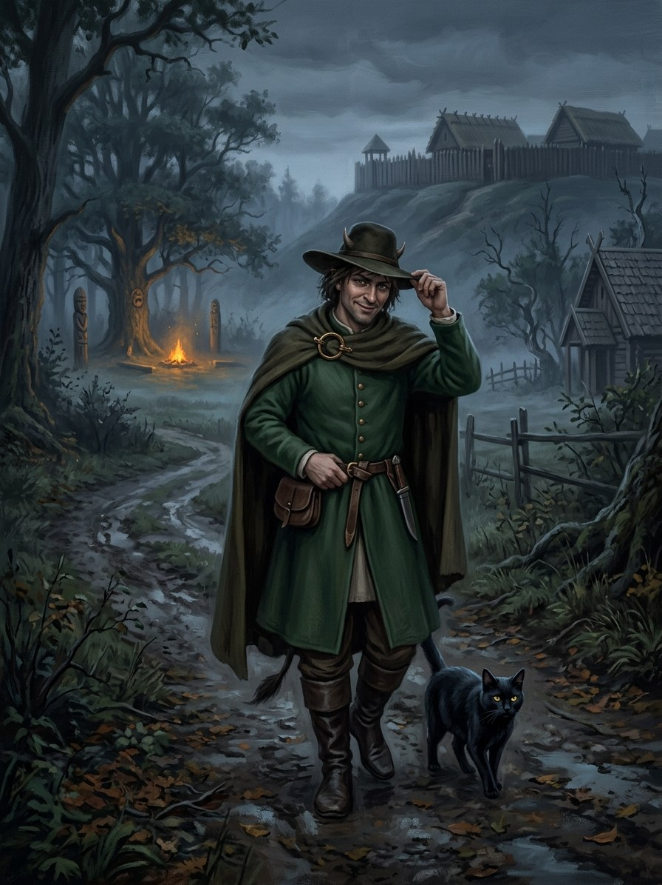

Velnias’s small shapes (velniukai)¶
Ryšiai
Bargained with: Ragana (seer-witch) (1387–…) — After the Krivis and vaidilutės are gone, Velnias’s small shapes are the only teachers left.
Shard of: Velnias
Origin [Historical record] Velnias as a gentleman in green, a black cat or a black dog, regularly cheated by peasants · [The saga's invention] velniukai, small change from the same purse
Tier Dvasia · shards of Velnias; the Shadow-Seller's scouts
Danger II hazard → III dangerous
Habitat Villages, mills, swamps and stones; after 1387 the towns where ledgers make better bargains
Wants Small deals, and to learn what a prince will need
Takes Bargains kept to the letter, paid later
Signs A black cat the day before a quarrel; a stranger in a too-fine green coat at a wedding who will not dance (he would show his foot); a dog that will not leave in a thunderstorm
Banes Thunder-stones; after 1387 the Candlemas thunder candle lit in storms
Half-wrong truth. These are not the Shadow-Seller himself, but small change from the same purse. Hungry and fair like their lord, they keep every deal to the letter and lose to anyone cleverer.
Scouts. The Shadow-Seller uses them as eyes: a black dog at the edge of the firelight is often how he learns what a prince will need.
Small bargains. In villages, worded precisely.
Teaching (after 1387). With the Krivis and the vaidilutės gone, they are the only teachers left to many raganos.
The thunder candle. Perkūnas's attention comes with it.
Never shake his hand. Rudeness to strangers is itself a sin against custom, so you may insult the Beggar by mistake.
Out-thinking him. Draft the deal yourself. If you are less clever than you think, the letter is your ruin.
Velnias’s small shapes (velniukai)

Velnias’s small shapes (velniukai) · creature¶
Tipas |
creature |
Status |
The saga’s invention |
Pastaba |
Bestiary §20. Danger II → III. |
Folk source [Historical record]¶
Velnias is one of the most vivid figures of Lithuanian folk tales. He often appears as a gentleman, frequently a „little German“ (vokietukas) in a green or black coat with a hat hiding his horns and a goose- or horse-foot he cannot hide. He also takes the shapes of black cats and black dogs, haunts swamps, stones and mills, makes bargains (signed in blood in Christian-era tales) and is regularly cheated by clever peasants. He fears Perkūnas, who hunts him with lightning; in storms people chased cats and dogs out of the house.
In the saga (where the folk are half-wrong)¶
Not the Shadow-Seller himself, but small change from the same purse: velniukai, minor shards of Velnias that do small deals in villages and serve as his eyes. The Shadow-Seller uses them as scouts; a black dog at the edge of the firelight is often how he learns what a prince will need. Velnias is hungry and fair: his small shapes keep every deal to the letter and lose to anyone cleverer.
Signs & habitat¶
A black cat that arrives the day before a quarrel; a stranger in a too-fine green coat at a wedding who will not dance (he would show his foot); a dog that will not leave during a thunderstorm.
Before / after the Unbinding¶
Before: country tricksters. After 1387 the green-coated gentlemen move to towns, where the Gold-Glutton’s ledgers make better bargains than any peasant’s harvest.
Banes, wards, bargains, and their cost¶
Thunder-stones and, after 1387, the Candlemas thunder candle lit in storms (Perkūnas’s attention comes with them). Never shake his hand or accept the first gift (rudeness to strangers is itself a sin against custom). Out-think him by drafting the deal yourself; if you are less clever than you think, the letter is your ruin.
Danger level¶
II hazard → III dangerous.
Story hooks¶
Book I: a black dog in the courtyard at Krėva the night of 15 August 1382 (ch. 8–9), watching the tower. Book VI: the black dog at the Pact fire (ch. 8, 27).
Sąsajos¶
graph LR
ragana["Ragana (seer-witch)"]
velnias["Velnias"]
velnio_pavidalai["Velnias's small shapes (velniukai)"]
velnio_pavidalai -->|Shard of| velnias
ragana -->|Bargained with| velnio_pavidalai
style velnio_pavidalai stroke-width:3px